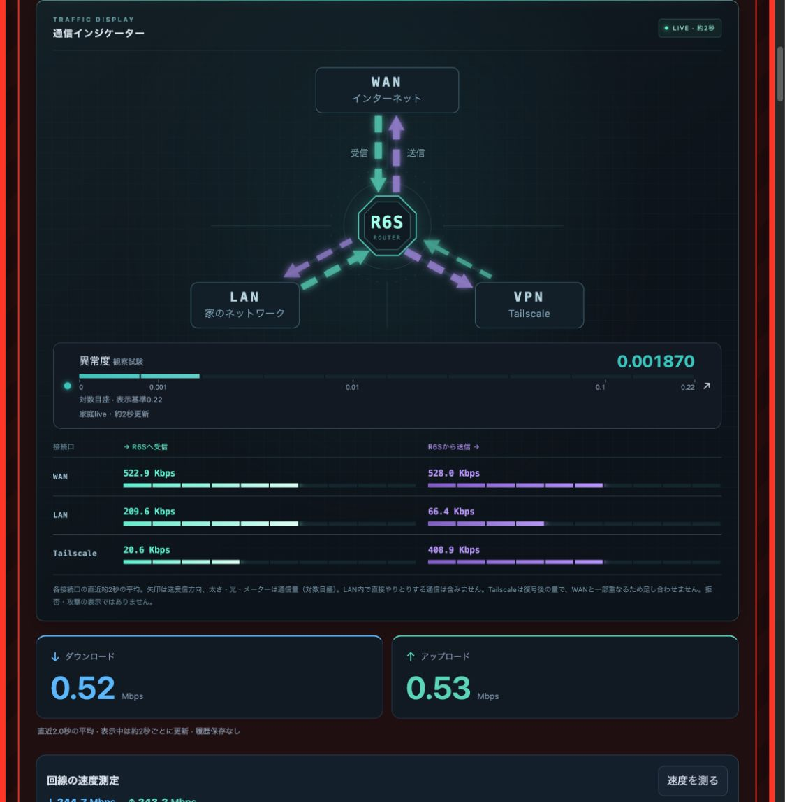
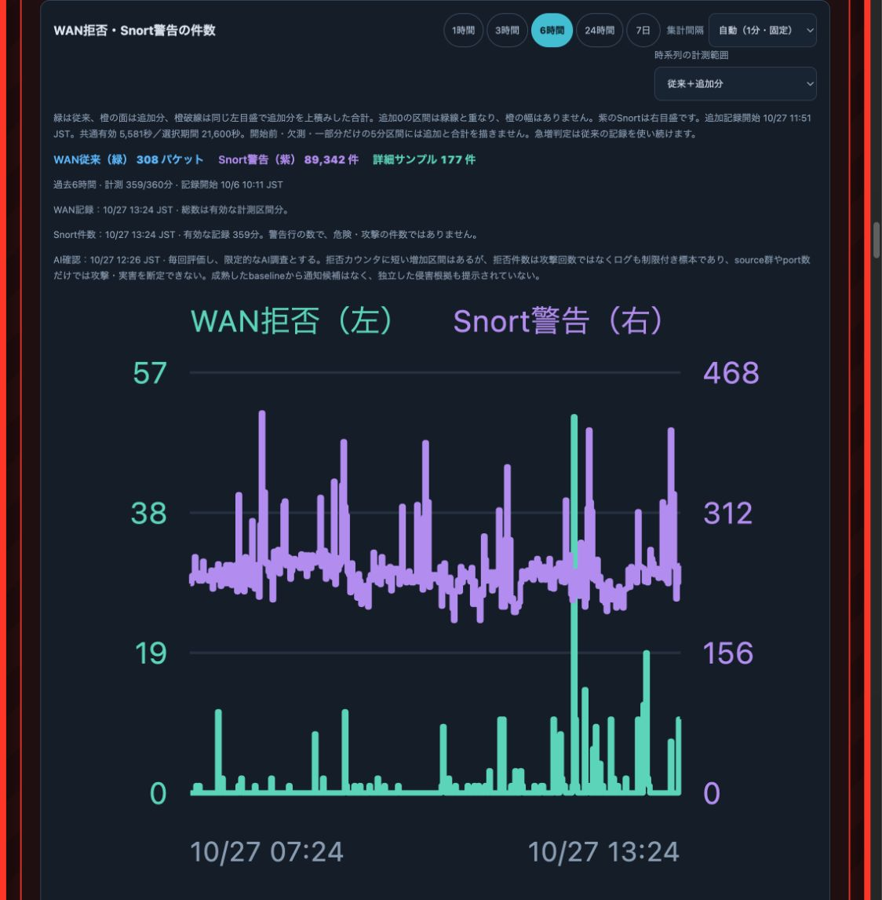

← Experiment overview and chronology
Development and UI
How the OS was built and installed, then extended with monitoring and a custom UI.
Terminology
- Build / firmware image
- Building converts source into executable artifacts. A firmware image is a file used to install the OS on a device.
- Colima / Docker
- Tools used to run the Linux build environment on the Mac.
- LuCI / dashboard
- LuCI is OpenWrt’s standard web configuration UI. The custom dashboard consolidates state, alerts and history.
- eMMC / SD
- eMMC is internal storage. Removable SD media is used for trials and recovery.
- Toolchain / feeds
- A toolchain contains compilers and related target tools. Feeds provide additional package build definitions.
- Receipt (verification record)
- A record binding the target version, evidence and result; its existence alone does not establish adoption or completion of every stage.
- Formal finish (workflow acceptance)
- Workflow completion after required originals, API and display evidence; distinct from fixing every software issue.
- Projection / rebinding
- Projection turns stored logs into aggregate/display data. Rebinding ties a review result to evidence for the corresponding configuration/version.
November 21, 2026 — fix expiry labels on completed update work
Dashboard r98 was installed on the evening of November 21. Expiry now applies to work that is still open. Completed work retains its completed label even when its last update is old, with the original timestamp still visible.
Desktop and 375px live views showed the completed kernel work without an expiry warning. Regression checks confirmed that stale open work still receives the expiry notice. The installation required no service or router restart.
November 12, 2026: display update stages, adoption and measurement state
On November 12 a work-progress panel was added directly below Software updates. It separates the change rationale, associated vulnerability identifiers, current stage and adoption state from detailed audit findings. Revision r82 passed native/API and desktop/375-px original-image acceptance; r83 then refined placement. Completing a display does not itself apply an update.
Revision r84 added distinct displays for measured outage and “not measured.” This kernel update remains unmeasured, and historical work-record expiry is not promoted to current health. Display checks for this revision rely on the owner’s saved observation notes; new original images were not preserved.
Roles were clarified: the audit owner handles applicability, scheduled review and audit results; the dedicated updater owns preparation, implementation, build, signing, recovery, authorized adoption, recovery acceptance and outage records. Existing tasks were retained without making a relay mandatory for every ordinary update.
November 4, 2026: add a Mac build volume and verify Docker-share filesystem semantics
A case-sensitive APFS development volume was added on the 2024 Mac with a 128-GiB quota and zero reservation. This is not a separately reserved128-GiB disk. Colima/Docker sharing was configured while preserving the VM and saved containers. A small filesystem probe accepted case-distinct names, links, execution permissions, fsync/atomic rename, timestamps and incremental make behavior.
Free space on the new Mac share is separate from the existing Linux-guest filesystem. This probe neither migrated all source/Git/SDK data nor qualified kernel/full-SDK builds. It illustrates why an OS build workspace must satisfy filename, permission and timestamp semantics as well as capacity.
Reconstruct current firmware and prepare the next kernel candidate
The new workspace supported a rebuild of the current Linux 6.12.112 kernel with its two existing repairs. Firmware was assembled offline from a frozen official root, 26 exact APKs and the rebuilt kernel, with 60 corresponding files checked for contents, size and hashes on the 2024 Mac. This is cached incremental rebuilding/reconstruction, not a clean make-world result.
A parallel 6.12.113 candidate reached application of the existing patch series and configuration generation. At the retained checkpoint its large compilation had not started, with no device write or boot acceptance. For the reconstructed current version too, artifact correspondence is separate from actual boot, all-kmod compatibility and restore testing. The earlier lesson that a successful build alone is insufficient still applies.
Development and build environment: Mac / Colima / Docker
Separately from the target devices, an existing Colima / Docker setup on a Mac provided the Linux build environment. Records dated 2026-09-11 describe building the toolchain, kernel, required packages and firmware image for the Pi 3 from official OpenWrt source in an Ubuntu 24.04 arm64 container. R6S work subsequently used separate target configurations and artifacts.
- Mac mini (2024)Authoritative source, Git, target settings, recipes
- Linux / DockerBuild toolchain, kernel, packages
- Artifacts and provenanceImage, hash, commit
- Pi 3 or R6SCheck boot, settings and functions
Target configurations and artifacts are separate. Build success and device acceptance are distinct stages.
- Mac host
- Maintains development source, Git history, configuration and build recipes. Release and feed revisions are pinned; execution records and artifact hashes are retained.
- Linux containers
- Run the OpenWrt build system. Build copies and intermediate files use a dedicated Docker volume for case-sensitive Linux filesystem behavior; host source was mounted read-only.
- Target devices
- Receive checked firmware/packages, with boot, configuration retention and function verified separately on the Pi 3 or R6S. Docker here is the Mac-side build infrastructure, not containerized monitoring on the R6S.
Build success, artifact-hash verification, installation and device behavior are separate validation stages. Retained source or a Git commit alone does not prove complete reproduction or restoration of every generation.
This experiment builds the required toolchain, kernel, selected packages and firmware image from official OpenWrt source, and runs R6S firmware with custom components. Maintaining the source and build environment gives us the option to incorporate a fix or update an individual package before an official fixed release is available.
Whether to act early depends on the issue’s impact, confidence in the fix, compatibility, validation results and ongoing maintenance cost. Following the official stable branch remains the default for shared foundations such as the kernel; individual early fixes require assessment of their scope. Maintenance policy and an example of an early fix
Building here means producing the components needed for the selected configuration. Updates also use incremental builds; this does not mean a clean rebuild on every update or building every available package. Some distributed inputs, such as the NPU SDK, are incorporated separately.
Preliminary platform: Raspberry Pi 3 Model B
Before the R6S, a small-scale OpenWrt trial ran on a Raspberry Pi 3 Model B (board revision 1.2, abbreviated Pi 3). A Raspberry Pi is a compact computer with its processor, memory and connectors on one board. This unit served as a preliminary test platform for OS installation, source builds, custom displays and updates before deploying the production router. Records from 2026-09-11 onward cover SD boot, local builds from official OpenWrt source, build identification in LuCI and configuration retention after updates. Later Pi 3 trials also included ntopng traffic visualization.
Key test-platform specifications: Broadcom BCM2837, 1.2 GHz quad-core 64-bit CPU, 1GB RAM, 100Mbps Ethernet and microSD boot. CPU and Ethernet rates are manufacturer specifications, not performance measurements from this experiment.
Specifications: official Raspberry Pi 3 Model B product page
- Pi 3 trial scope
- OS installation and boot, source builds, update continuity for custom display changes, and basic management/traffic-visualization checks.
- Subsequent R6S work
- Checked the R6S shipped FriendlyWrt system, switched to official OpenWrt, then added monitoring software, a custom dashboard, native processing and passive NPU inference experiments in stages.
Pi 3 boot, update and display checks are distinct from R6S Snort or NPU validation. They do not establish performance or driver compatibility on different hardware.
OS migration: FriendlyWrt → official OpenWrt
The shipped FriendlyWrt system is FriendlyElec’s derivative of OpenWrt with its own modifications. FriendlyElec manages its firmware configuration, releases and distribution separately from the official OpenWrt releases.
Manufacturer introduction to FriendlyWrt
| Stage | OS | Linux | Boot media and check scope |
|---|---|---|---|
| Shipped system | FriendlyWrt 24.10.4 | 6.1.141 | eMMC |
| After manufacturer update | FriendlyWrt 25.12.5 | 6.1.141 | eMMC |
| Official-system boot check | OpenWrt 25.12.5 | 6.12.94 | Booted from SD; FriendlyWrt retained on eMMC at this stage. |
Subsequent development uses an official-OpenWrt base. Boot media, kernel, drivers and logical port assignments were checked separately during migration. These are historical versions; matching OS version labels do not establish identical configurations.
After the SD trial, we kept the working card and moved normal operation to eMMC. On 2026-09-25, we verified booting from the inserted SD and returning to eMMC after removing it. The saved card provides a separate boot environment to try if the eMMC system has a problem.
Adding R6S to the existing Deco X95 Wi-Fi mesh
Originally, a TP-Link Deco X95 acted as the router within the home’s Deco Wi-Fi mesh. We added R6S to handle the Internet gateway and traffic observation, while continuing to use Deco for Wi-Fi.
BEFORE
- ONUOptical network terminal
- Deco X95 / Router modeRouting, DHCP and Wi-Fi
- Mesh Wi-Fi and devicesExisting Deco network
AFTER
- ONUOptical network terminal
- R6S / OpenWrtWAN → LAN: routing, DHCP/DNS, observation
- Deco X95 / AP modeEthernet connection to R6S LAN
- Mesh Wi-Fi and devicesExisting Deco equipment continues on the Wi-Fi side
A simplified role diagram; it does not specify Deco counts, locations or individual wired/wireless backhaul links.
R6S has no built-in Wi-Fi; its LAN connects to the main Deco over Ethernet. Deco was switched to Access Point (AP) mode. The original note’s term “bridge mode” describes this division of roles.
| Function | Before | After |
|---|---|---|
| Routing and NAT | Deco X95 | R6S / OpenWrt |
| DHCP, reservations and DNS | Deco configuration | Settings moved to R6S, which also became the DNS entry point |
| Wi-Fi and mesh | Provided by Deco | Deco retained in AP mode |
| Traffic observation and custom history | Added by this project | Later experiments added R6S collection and recording; AI-review orchestration subsequently moved to Pi 5 |
The cutover: September 25–26 records
- First, test behind Deco. R6S WAN connected to the existing Deco LAN, and a management Mac used a separate R6S test LAN. Deco continued serving the usual network while R6S boot, port mapping and outbound connectivity were checked.
- Move to the uplink. Ethernet was changed to ONU → R6S WAN, and R6S LAN → Deco. The work log records an intermediate two-router setup with Deco still in router mode, where R6S obtained a WAN DHCP lease and reached external HTTPS.
- Switch Deco to AP mode and carry over LAN settings. The owner changed Deco’s mode, and the existing LAN addressing, allocation range and reservations were configured on R6S. Many clients were confirmed using R6S DHCP; the advertised DNS entry point was subsequently changed to R6S.
- Adjust address distribution. The owner disabled Deco Smart DHCP, and a migration-related R6S DHCP outage was corrected. Transferring reservation settings and verifying that every client has renewed its lease are separate checks.
- Check the link rate. On September 26, the Deco connection moved from its 1GbE port to its 2.5GbE port, and the R6S link was verified at 2.5Gbps full duplex. This is the negotiated link rate, rather than an Internet-speed or monitoring-throughput measurement.
How LAN DNS and Tailscale were kept distinct
A migration problem: DHCP stopped
While temporarily preserving an old management address, a no-DHCP setting for the same LAN bridge caused dnsmasq’s generated configuration to exclude the whole bridge. Removing the redundant DHCP section restored allocation. This showed why generated configuration and actual lease distribution need checking alongside address migration.
Checks for your own setup
Identify the uplink connection method, AP-mode support, the DHCP provider and required reservations or forwarding rules. AP mode changes Deco’s gateway features; retaining the mesh does not retain every router-mode function. Dynamic client addresses may also change.
Check guest-network isolation and actual wired/wireless links separately. Retain the original wiring and Deco settings so the old router-mode setup can be restored if needed. Pi 3 was a trial device; the network rollback path was the previous Deco setup.
The owner’s original account (2026-09-28): Running, managing and modifying a router with AI (Japanese)
Product-mode and topology references: TP-Link · Router / AP · Deco with an existing router
The first R6S checks
This sequence follows the saved September 25 record; generic flashing commands have not been relabeled as actions performed here.
| Step | Action | What was verified |
|---|---|---|
| 1 | Try official OpenWrt from SD | Booted while preserving FriendlyWrt on eMMC; verified 25.12.5 / Linux 6.12.94. |
| 2 | Identify media and storage | Distinguished SD root/overlay from internal eMMC; later verified SD extroot after reboot. |
| 3 | Map physical ports to logical names | WAN = eth1; LAN = eth0 + eth2. Verified a direct Mac 2.5GbE link; FriendlyWrt numbering was not reused. |
| 4 | Check management and connectivity | Checked key-based SSH, LuCI, WAN address acquisition, DNS and external HTTPS at the relevant stages. |
| 5 | Move to eMMC and retain the SD | Verified eMMC → saved SD → eMMC on September 25. The SD’s old storage configuration did not automatically mount the newer eMMC data area. |
A compact record for your own trial
Keep the device, download origin, image filename, acquired SHA-256, writing method, OS/kernel, root/overlay media, port mapping, connectivity checks and saved-SD identification together. The narrative records inspected here do not reconstruct the initial official SD image’s exact filename, hash and writing action as one verified set, so those details are not asserted.
Monitoring software added after OS installation
After switching to official OpenWrt, existing tools were added for traffic visualization and rule-based intrusion detection (IDS). Custom code then connected alert collection, history, AI review and a separate dashboard.
| Added component | Role | Distinction from the base OS |
|---|---|---|
| Tailscale | Connectivity for remote administration. | Installed separately on 2026-09-25; a separate role from traffic analysis and IDS. |
| ntopng | Traffic-volume, flow and protocol visualization and analysis. | Installed separately after the switch to official OpenWrt. |
| Snort 3 | Rule-based IDS alerts; passive monitoring at installation. | An IDS added later; a matching alert is not confirmation of an intrusion. |
Custom collection, SQLite persistence and judgment-history processing followed, leading to Python optimization and Rust migration. The Kitsune-inspired 115-feature/NPU scoring path is a separate subsequent experiment from Snort rule matching.
See connections and observation points
What Tailscale is used for
Tailscale is a VPN for connecting your devices across locations. It was added on September 25 and is used as the remote-management connectivity layer in this experiment, separately from this public lab-notes website.
| Use | Role in this experiment |
|---|---|
| Access to management views | Tailscale Serve provides HTTPS access to the custom dashboard, LuCI and ntopng from the network of authorized devices, called a tailnet. Configuration, observation and detailed analysis keep their separate views. |
| A path for remote maintenance | Tailscale supplies device connectivity for maintenance such as SSH with the existing keys and permissions. VPN reachability and authorization to act remain separate. |
| Exit node | An exit-node configuration also lets a client select R6S as its Internet egress. The September 28 record confirms router-side configuration and administrative approval. |
| Visible activity | The VPN corner of the triangle displays Tailscale reception/transmission separately from WAN and LAN. |
Verification scope and update history
Exit-node configuration/approval and Web-browsing or speed tests from an external client are separate checks. The September 28 record inspected here does not confirm completion of those client tests. Real addresses, management URLs and peer inventories are omitted.
DNS: distinguish ordinary names from Tailscale names
DNS translates device and site names into addresses. At that time, ordinary DNS coexisted with MagicDNS for Tailscale device names. A saved September 25 Mac DNS readout contains both the ordinary resolver and a resolver scoped specifically to the tailnet domain.
Use the ordinary DNS path
Use Tailscale MagicDNS
A conceptual division of roles, rather than a trace of OS/proxy internals or every DNS query.
| Scope | Configuration and role |
|---|---|
| Observed on the Mac | Alongside the ordinary Wi-Fi DNS resolver, a domain-scoped resolver directed names matching the tailnet domain to Tailscale. Actual device and domain identifiers are omitted here. |
| LAN DNS | The subsequent LAN configuration advertised R6S through DHCP option 6. dnsmasq resolved local reserved names and forwarded external queries to the selected upstream DNS. Clients needed a DHCP lease renewal to adopt that change. |
| Management access | The Mac used a Tailscale device name to reach R6S and Serve for HTTPS management. The same day’s saved records confirm DNS-name access and successful TLS certificate verification. |
Think of this as selecting a resolver by the name’s scope. Listing DNS servers does not guarantee the order in which the OS queries them. It does not establish a universal ordinary-DNS-first, then-Tailscale retry sequence.
DNS configuration on R6S itself
The R6S record also includes accept-dns=false. This controls whether R6S accepts Tailscale DNS configuration changes; it is separate from the Mac’s domain-scoped name resolution.
Mechanism references: Tailscale DNS, domain scopes and resolver ordering · MagicDNS · DNS configuration changes
Revisiting Tailscale distribution (October 21–23, 2026)
Tailscale provides remote access to the management UI. On the evening of October 21, the self-built version was replaced with an official distributed binary as part of work checking CA/certificate trust sources. Connectivity and the management UI recovered. The daily security journal summarizes this under October 22, but the switch itself took place on October 21.
On the morning of October 23, the same Tailscale 1.104.2 was rebuilt using its official Go toolchain lineage and returned to the normal system area as a signed OpenWrt package. Authentication state and existing HTTPS serving settings were preserved; running state and the UI were checked. This replaced a special data-area placement before that evening’s p2 expansion. These records do not establish end-to-end Exit Node use from an external client.
Also on October 23, the OS CA bundle was updated to ca-bundle 20260816-r2. Separately from Tailscale’s built-in Go mitigation, this changes the OS list of trusted certificate authorities. Normal-signature installation, a fresh TLS connection and review/UI correspondence were checked; reloading existing TLS contexts or immediate adoption by every application was not established. See the daily entry and primary sources for the bounded result.
Management UI: from LuCI extensions to a custom dashboard
- Initial stage: extend the standard UI
- The initial approach modified and extended OpenWrt’s standard LuCI interface to display IDS status, alerts and AI-review results. Records dated 2026-09-25 include Snort UI/ACL additions and LuCI display checks.
- Subsequent stage: custom interface
- The approach of extending the standard UI was discontinued in favor of a custom observation/operations dashboard built with HTML, CSS, JavaScript and dedicated data APIs. Records dated 2026-10-02 cover visibility-aware fetching, incremental rendering, and preservation of expanded state and focus.
- UI responsibilities
- The custom dashboard consolidates traffic, resource, IDS and judgment-history information for observation and operations. LuCI remains the standard configuration interface; ntopng provides a separate detailed-analysis interface. Dashboard migration does not mean LuCI or ntopng was removed.
Rationale: source management and upstream maintenance
One reason for discontinuing LuCI extensions was simpler source management. Layering custom changes onto standard LuCI requires reapplying, adjusting, resolving conflicts and validating those changes as LuCI evolves. A separate observation/operations dashboard reduces the work of maintaining upstream and custom changes in the same source tree.
BEFORE: LAYER CHANGES INTO THE SAME SOURCE
- LuCIAdd custom displays to upstream source
- Upstream LuCI updateReapply patches; resolve conflicts
AFTER: VERSION COMPONENTS SEPARATELY
Retained for standard settings, following upstream updates.
Observation and operations UI; custom source versioned independently.
The resulting interfaces have separate roles. OS, configuration and data-API integration still needs checking.
Custom HTML, CSS, JavaScript and APIs are versioned as a separate unit, separating standard-LuCI updates from custom-feature updates. This is a source-management objective, not a measured maintenance-effort reduction. Integration with the OS, data APIs and standard configuration still requires validation.
LuCI extensions and the custom dashboard are separate implementation stages. Dates identify the available records rather than an asserted exact cutover date. Management URLs and device identifiers are omitted; the screenshots below are saved actual screens.
The triangular traffic display
This view was designed to make current direction and interface activity easy to follow at a glance. WAN, LAN and VPN form a triangle, combining numbers with direction, color and changes in light.
Actual-screen GIF: triangle and NPU meter (expand/collapse)

View the earlier still screenshot

| Visual cue | Meaning |
|---|---|
| Three interfaces | WAN above, LAN below left and Tailscale below right, arranged around R6S. This is an interface view, not a physical wiring or peer-to-peer route diagram. |
| Colors and arrows | Green means reception into R6S; purple means transmission out. Reception on WAN comes from the upstream link; on LAN it comes from the home network. |
| Width, light and meters | Responds to traffic averaged over roughly two seconds. Logarithmic scaling keeps small transfers visible; the brightness is not an independent periodic pulse. |
| Reading the values | Values belong to individual interfaces. Tailscale shows traffic inside the tunnel and overlaps WAN, so totals must not be added. This does not show all downstream-only LAN traffic or attack counts. |
A look at the dashboard in daily use
For example, a morning visit starts with collection/review health and whether anything needs human attention. Expand history when a reason or a change needs a closer look.
| Where to look | What to read |
|---|---|
| Execution health | Read the review-health badge and the separate collection/completion times. |
| Need for action | Check the summary for actionable alerts; the newest collected logs may await AI review. |
| Judgment and history | Expand recent checks to read reasons, the review window and changes since earlier judgments. |
October 25, 2026: clipped WAN-chart labels corrected
Protocol labels were clipped in the custom dashboard’s WAN-port summary. Text bounds were checked for both top-10 and top-50 views, on desktop and a 360px-wide screen, at both ends of horizontal scrolling and after closing/reopening. This presentation fix makes existing results readable; it does not change traffic aggregation or detection performance.
October 27, 2026: widen WAN observation and compare matching time coverage
The original rejected WAN-to-router traffic summary remains available. An expanded mode adds reviewed terminal drop/reject observations in OpenWrt’s fw4 firewall. Counters observe existing decisions; they do not change which traffic passes or is blocked. Counts represent packets, not connections or attacks.
Recording of the added scope began on October 27 without historical backfill. Combined totals use only intervals with valid records for both scopes. An expanded total can therefore be smaller than a legacy total covering more history. Comparisons must align coverage as well as counts.
The time series keeps legacy traffic green, adds an orange area and marks the combined upper edge with an orange dashed line over shared valid intervals. Pre-start, missing and partial intervals remain distinct from measured zero. Snort retains a separate right axis. API checks across periods and desktop/narrow views confirmed mode changes preserve legacy history and Snort series.
Traffic stopped upstream or before the observed stack, accepted traffic and other excluded paths remain outside coverage. If added recording stops, for example at a storage limit, legacy recording continues and the added scope is missing. Persistence was configured, but an actual reboot/reload was not exercised in this update. Packet-processing performance improvements were not measured.
Reading the actual WAN graph


- Green shows WAN rejection and purple shows Snort alerts. Read green against the left axis and purple against the right. Their heights cannot be compared as counts. Snort counts alert-log rows, not confirmed attacks or intrusions.
- The expanded mode is selected. The saved result has zero added packets, so no orange area is visible. Recorded additions would appear as an orange area above green and a dashed combined upper edge. No additions have been invented for the image.
- The selected six hours differ from shared valid coverage. Added recording began that day; additions and combined totals require matching valid intervals. Pre-start or missing records are not filled with zero.
October 30–31, 2026: grouped review lists link warnings to their evidence
On the evening of October 30, the software-review list gained collapsible, colored status groups. Counts, target software and breakdowns derive from the same set so overview and details correspond. October 31 repaired original-status rendering and added links to the details causing a warning, accepted on-device at desktop and narrow widths. Names and targets accompany colors.
Historical NPU-reconnection investigation now separates confirmed facts, unknowns, measures and remaining checks, distinguishing an investigation deadline from current NPU operation. Internal identifiers and original wording remain available in expanded details. Dates, original judgments and deadlines were not removed to make the UI appear healthy. Readability repairs are distinct from establishing historical causes or completing security fixes.
Next trial: inferring the purpose of encrypted traffic (October 23, 2026)
While Kitsune examines deviations from usual traffic, this trial estimates usage: call activity, cloud communication or other traffic. As an exploratory step toward possible prioritization, it compared what can be inferred without decryption. This was an offline public-data experiment on the 2024 Mac, with no R6S deployment, NPU execution or automatic QoS activation.
After an initial five-usage comparison, public call, cloud and browser records expanded the comparison to three usages across 574 PCAPs, 13,157 connections and 549 recording groups. Recordings were separated across training, calibration and evaluation, with an unseen app and region held out. Inputs were limited to 0.25, 1 or 3 seconds after connection start and at most 64 packets. Machine learning used sizes, directions and timing, excluding IP addresses, ports, SNI and payload. nDPI also used visible connection-handshake information without decryption; statistical models or a small neural network (NN) supplemented connections with unresolved usage.
At one second, the 1,848-connection regular evaluation gave overall accuracy of 80.63% for nDPI plus forest (an ensemble of decision trees) and 81.33% for nDPI plus NN. However, recording/usage-balanced accuracy favored the statistical approach, 83.88% versus 81.75%, and false call classifications increased for NN in the unseen region. Abstentions were not counted as correct. Call and cloud labels include control connections, so these are not detection rates specifically for voice media or file-transfer payload. The results do not establish overall NN superiority or household accuracy.
On the Mac, median normalization plus inference took 35.06µs for the selected NN and 963.73µs for the selected forest. Faster shallow-tree and linear alternatives also existed, so NN was not faster than every statistical method. Collection, feature extraction and nDPI were excluded from these timings. Improving abstention rules and validation across devices, regions and apps comes before deployment.